9 апреля 1946
Было принято постановление Совета Министров СССР № 805-327сс о создании КБ-11.
Начальником КБ-11 по предложению Юлия Борисовича
Харитона был назначен Павел Михайлович Зернов, а сам Харитон — главным
конструктором
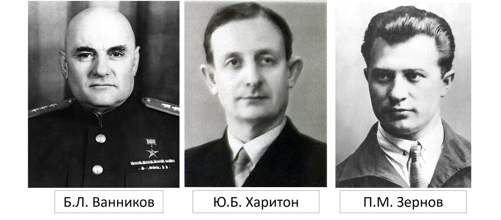
1 июля 1946
Начальнику Первого Главного управления при Совете Министров СССР Б.Л. Ванникову
было
направлено
«Тактико-техническое задание на атомную бомбу» подписанное главным
конструктором Ю.Б
Харитоном
19 июня 1947
Постановлением Совета Министров СССР были определены основные задачи программы испытания первого
советского ядерного заряда, носившего условное обозначение «Реактивный двигатель С-1» (РДС-1),
научный
руководитель - Ю.Б.Харитон
Техническое задание состояло из нескольких пунктов и оговаривало:
- Вид ядерного горючего
- Cпособ его перевода через критическое состояние
- Габаритно-массовые характеристики атомной бомбы
- Разновременность срабатывания электродетонаторов
- Требования к высотному взрывателю
- Требования к самоликвидации изделия в случае отказа аппаратуры, обеспечивающей срабатывание этого взрывателя
13 августа 1948
Завершены основные работы по сооружению местного аэродрома с подписанием акта. А так же состоялся первый
пассажирский рейс самолета из Москвы в поселок Саров (
16 ноября 1948
)
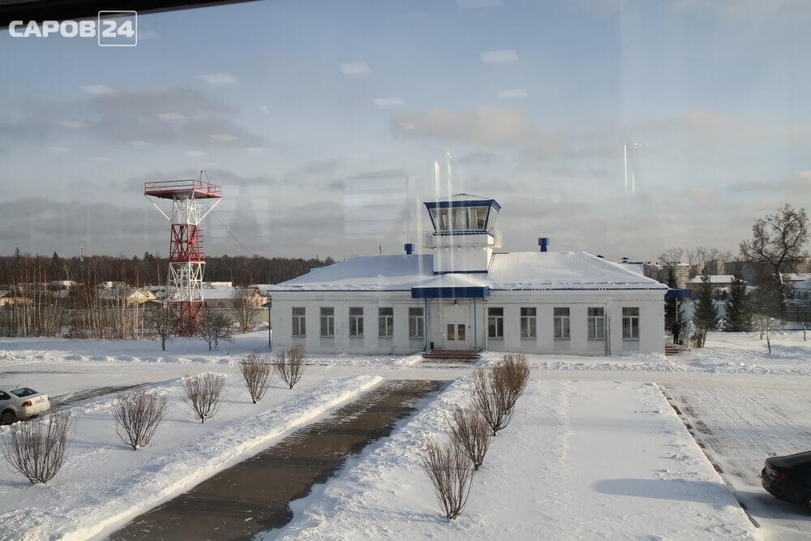
1 февраля 1949
В КБ-11 введена в эксплуатацию установка, на которой проверялась критическая масса первого
ядерного
заряда РДС-1. спроектированная под руководством Г.Н.
Флерова
30 мая 1949
Комиссией в составе: П.М. Зернов (председатель), Ю.Б. Харитон,
К.И. Щелкин,
В.Г. Кузнецов, И.Г. Наслузов,
В.В. Чижов и Г.Н. Флеров подписан акт приема изделия из сплава «аметила» с объекта Б.Г.
Музрукова
8 июня 1949
Ю. Б Харитон и К.И Щелкин -
представили в Спецкомитет Л.П. Берия доклад о решении всех теоретических,
конструкторских и технических задач, связанных с разработкой РДС-1. И.В.Курчатов назначил дату
проведения испытания -
29 августа 1949 года
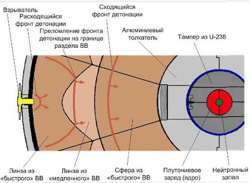
26 июля 1949
К работе на Семипалатинском испытательном
полигоне приступила Правительственная комиссия под
председательством М.Г. Первухина.
До
5 августа
комиссия провела 9 заседаний, на которых обсуждались
конкретные вопросы, связанные с
подготовкой к испытаниям всех служб и объектов полигона
5 августа 1949 - 28 августа 1949
В опытно-промышленном производстве завода «В» были изготовлены детали ядерного заряда для первой
плутониевой бомбы.
Была проведена окончательная сборка заряда. Окончательный монтаж заряда был завершен к 3:00 часам
утра
29 августа
29 августа 1949
В 7:00 по местному времени (4:00 по московскому времени) на Семипалатинском
испытательном полигоне был взорван первый советский ядерный заряд мощность 20 килотонн
тротилового эквивалента
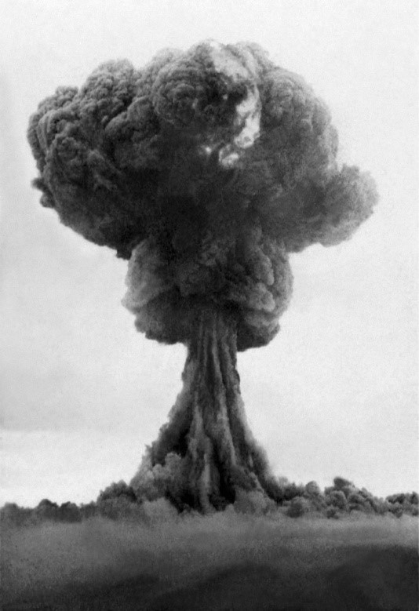
13 ноября 1950
Приказом по объекту в КБ-11 создано математическое бюро во главе с Н.Н.
Боголюбовым в
составе 2-х групп. И на базе математического бюро в НИС создан математический отдел во главе с
Н.Н.
Боголюбовым (
1 января 1951 года
)
24 сентября 1951
На Семипалатинском полигоне проведено успешное
испытание созданной в КБ-11 атомной бомбы РДС-2 мощностью
38,3 кт. Это был второй атомный взрыв в СССР
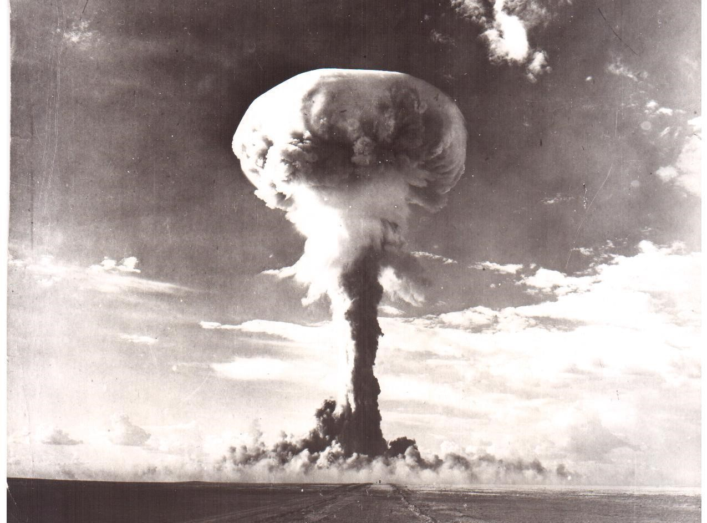
18 октября 1951
В районе Семипалатинского полигона успешно
прошло первое в СССР воздушное испытание разработанной КБ-11
атомной бомбы РДС-3 сбросом с самолета Ту-4
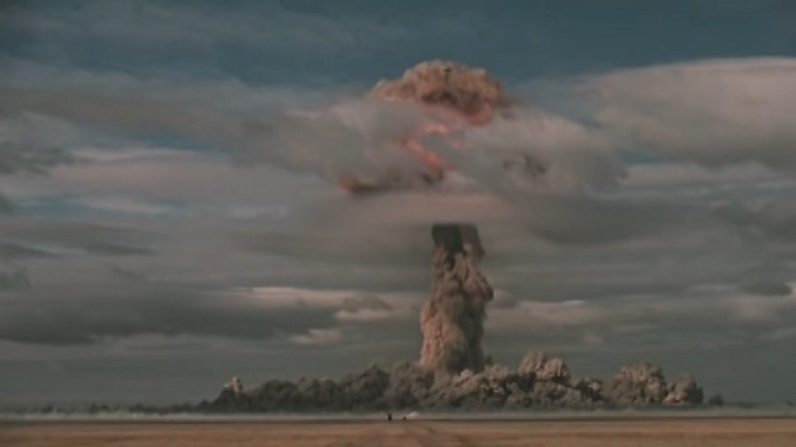
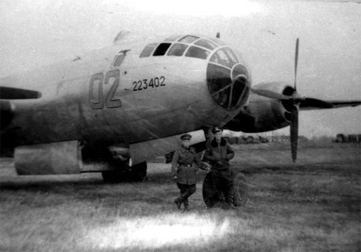
15 декабря 1951
А.Д.
Сахаров выдвинул идею магнитной кумуляции как нового пути разработки ядерных зарядов. Им
было
предложено 2 направления в создании магнитных генераторов
12 августа 1953
На Семипалатинском полигоне состоялось
испытание первой советской одностадийной термоядерной
(водородной) бомбы, которая имела «служебное» название РДС-6с (А.Д
Сахаров,
Ю.Б. Харитон,
Я.Б. Зельдович
и др.)
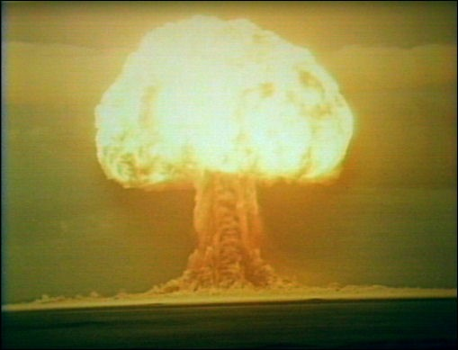
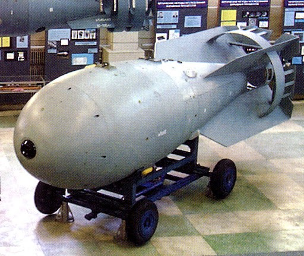
23 августа 1953
Проведено испытание созданной в КБ-11 малогабаритной атомной авиабомбы для тактических
бомбардировщиков.
Постановка ее на вооружение обеспечила возможность значительного сокращении Вооруженных Сил CCCP
14 сентября 1953
Н.И. Павлов и К.И. Щёлкин направляют В.А. Малышеву докладную записку о возможности
использования РДС-4
на учениях
10 октября 1953
в Прикарпатском военном округе
22 ноября 1955
В Советском Союзе были проведены полигонные испытания водородного заряда РДС-37 большой мощности,
основанного на новой двухступенчатой физической схеме. Заряд в составе экспериментальной бомбы был
сброшен с самолета Ту-16 и взорван на высоте 1500 м
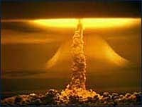
2 февраля 1956
На ракетном испытательном полигоне «Капустин Яр» состоялись первые испытания ракеты Р-5М с
ядерной
боеголовкой (председатель Госкомиссии - маршал М.И. Неделин)
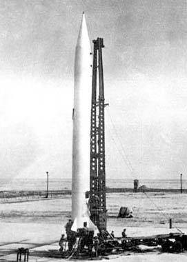
6 апреля 1957
Введена в эксплуатацию первая в КБ-11 ЭВМ «Стрела» с быстродействием 1000
операций в секунду, пришедшая
на смену механическим вычислительным машинам типа «Мерседес» и арифмометрам «Феликс»
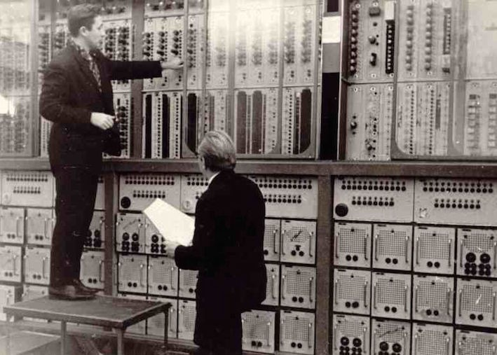
10 октября 1957
Ha Cеверном испытательном полигоне «Новая Земля» завершились успешные государственные испытания и
принятие на вооружение ВМФ о торпеды Т-5 с ЯБП разработки
1 января 1958
С этого дня введены новое условное наименование КБ-11 «Предприятие п/я 976» и новые адреса
переписки
28 апреля 1959
Выход постановления ЦК КПСС и СМ СССР «О перестройке научного руководств КБ-11». В
соответствии с ним
Ю.Б. Харитон стал
научным руководителем. Введены должности 2-x главных конструкторов: по разработке
зарядов и разработке боеприпасов
1 января 1960
Городу присвоено наименование «Арзамас-75»
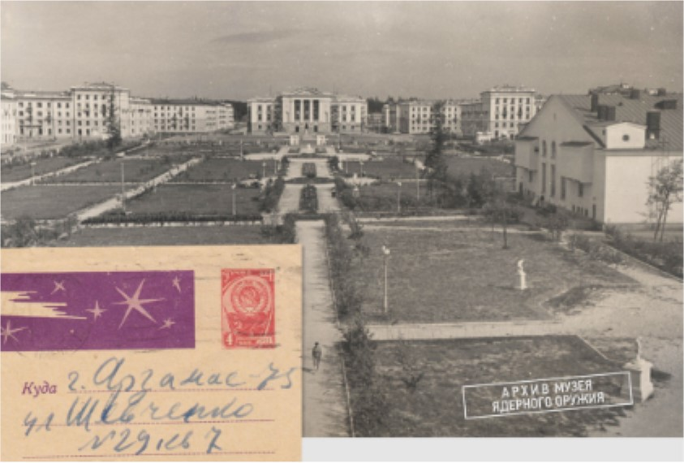
11 октября 1961
На Семипалатинском полигоне в штольне
В-1 осуществлен первый подземный ядерный взрыв мощностью 1 кт с
зарядом HИИ-1011. Целью испытания были фундаментальные и методические исследования
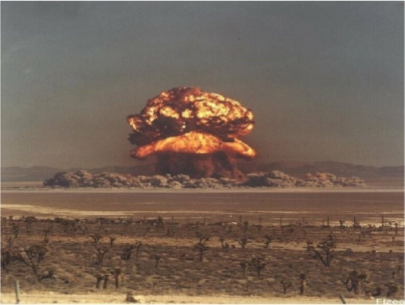
30 октября 1961
На Северном испытательном полигоне «Новая Земля» был испытан термоядерный заряд И-602 (в
составе
авиабомбы АН-602) проектной мощностью 100 мегатонн ТЭ., разработанный в КБ-11
(ВНИИЭФ) под руководством
А.Д.Сахарова
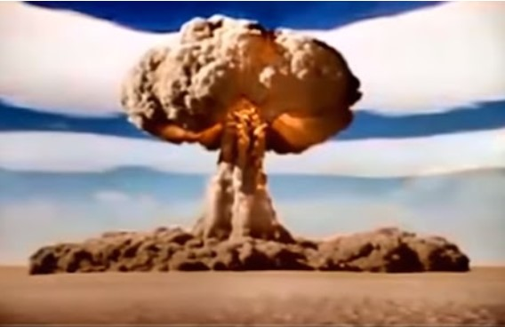
15 января 1965
В 9:00 по московскому времени в Казахстане произведен первый в СССР мирный подземный взрыв
разработанного в КБ-11 ядерного заряда, с помощью которого был образован: искусственный водоем -
водохранилище в русле реки Чаган
1 января 1967
Приказом по Министерству среднего машиностроения КБ-11 было присвоено наименование
Всесоюзный
научно-исследовательский институт экспериментальной физики (ВНИИЭФ)

25 октября 1967
Во ВНИИЭФ введена в эксплуатацию первая ЭВМ «БЭСМ-6» с быстродействием 1 млн
операций в секунду
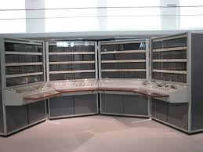
26 сентября 1969
В 10:00 по московскому времени произведен взрыв ядерного заряда мощностью 12ктТЭ в
Ставропольском крае на Тахта-Кугультинском газовом месторождении с целью интенсификации
добычи газа
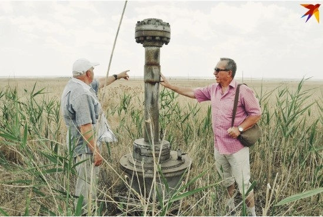
7 апреля 1970
Коллектив ВНИИЭФ награжден Ленинской юбилейной почетной грамотой ЦК КПСС, Президиума
Верховного Совета
СССР и ВЦСПС за достижение высоких показателей в социалистическом соревновании в честь
100-летия
со дня
рождения В.И. Ленина
18 января 1971
Указом Президиума Верховного Совета СССР коллектив ВНИИЭФ награжден Орденом Октябрьской
Революции
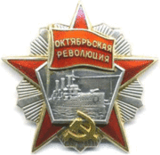
15 августа 1973
В 5:00 по московскому времени в Казахстане успешно осуществлен камуфляжный взрыв заряда,
созданного во ВНИИЭФ, взрыв произведен в соответствии с программой работ по сейсмическому
зондированию
земной коры с целью обнаружения полезных ископаемых
1 января 1974
Весь жилой фонд ВНИИЭФ передан в ведение исполкома городского совета депутатов трудящихся
20 сентября 1974
Решением исполкома городского совета депутатов трудящихся утверждено положение о Почетном гражданине
города. Первому это звание было присвоено дважды Герою Социалистического Труда Борису
Глебовичу
Музрукову в течение
20 лет
директора ВНИИЭФ
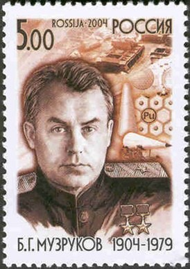
29 ноября 1974
Введена в эксплуатацию пневмогидравлическая ударная установка ПУ-1600 с ускорителем для проверки
стойкости изделий к соответствующим величинам ударных перегрузок
31 декабря 1976
Завершено сооружение уникального экспериментального комплекса, включающего в себя ракетный трек и
ударную трубу взрывного действия, оснащенного средствами аналоговых хронографических,
радиотелеметрических и оптических измерений
25 марта 1977
Веден в эксплуатацию реактор БИГР на быстрых нейтронах с активной зоной из
уран-графитового топлива,
имевший тогда рекордный в СССР и за рубежом интегральный поток нейтронов
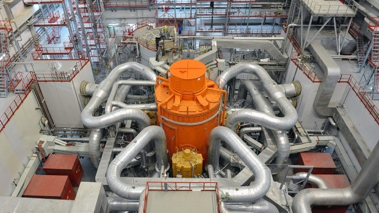
6 октября 1988
Решением городского совета народных депутатов одной из новых улиц на севере города присвоено имя Героя
Социалистического Труда, руководителя советского атомного проекта И.В.
Курчатова
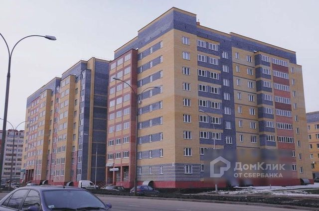
26 марта 1989
В г. Арзамас-16 начала функционировать двусторонняя междугородняя телефонная связь
28 февраля 1992
Во ВНИИЭФ побывал Президент РФ Б.Н. Ельцин. Его распоряжением ВНИИЭФ получил статус
Российского
федерального ядерного центра – Всероссийского научно-исследовательского института
экспериментальной
физики (РФЯЦ-ВНИИЭФ)
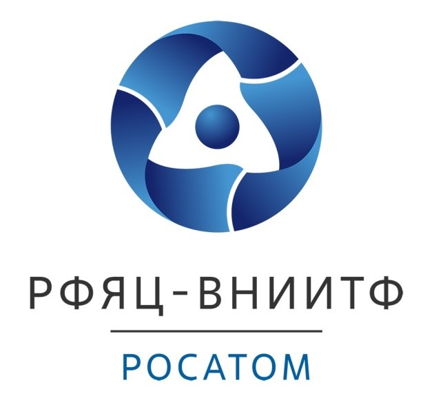
30 сентября 1992
Приказом министра Юлий Борисович Харитон по собственной просьбе освобожден от обязанностей
научного
руководителя и с
1 октября 1992
назначен Почетным научным руководителем
института
16 декабря 1992
Объявлено решение руководства о создании на базе 2-x опытных заводов комплексного производства -
завода
ВНИИЭФ
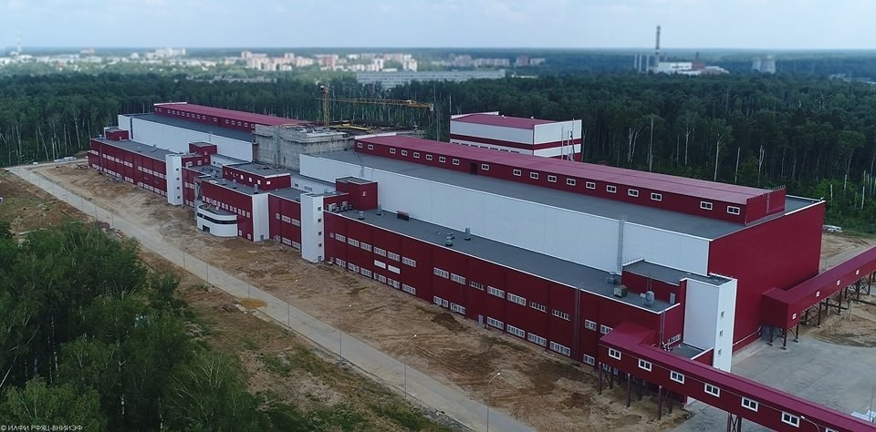
30 декабря 1993
Введен в действие в полном объеме радиационно-облучающий комплекс «Пульсар», предназначенный для
имитации комбинированного воздействия на испытуемые образцы узлов и изделий проникающих излучений
ядерного взрыва
7 февраля 1994
В институте появился аварийно-технический центр (АТЦ)
27 февраля 1999
Торжественно открыт филиал музея ВНИИЭФ - музей-квартира академика Юлия Борисовича
Харитона
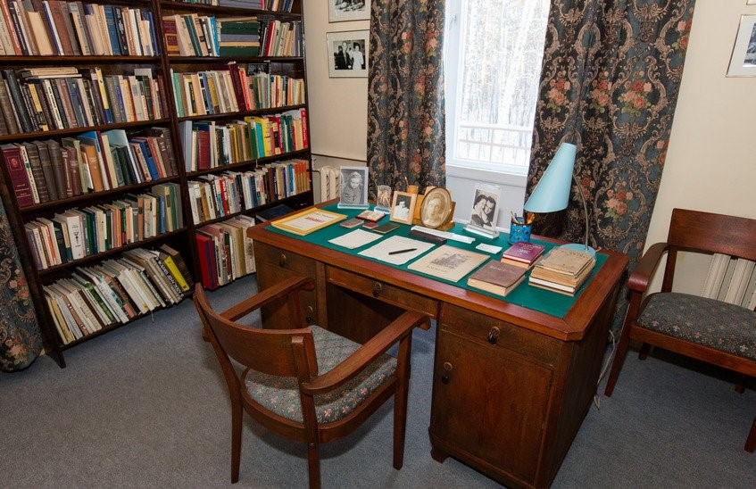
19 октября 1999
Выход приказа о создании с
1.11.99 года
на базе существующих отделений
института теоретической и
математической физики (ИТМО) во главе с Василием Петровичем Незнамовым
12 июля 2000
Выход приказа об образовании с
1 февраля 2000
в структуре РФЯЦ-ВНИИЭФ на
базе ЦЯРИ института ядерной и
радиационной физики (ИЯРФ)
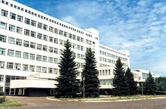
24 августа 2000
В соответствии с приказом с
1 августа 2000
образован институт
экспериментальной газодинамики и физики взрыва
(ИОВ)
11 ноября 2000
В структуре РФЯЦ-ВНИИЭФ образован институт лазерно-физических исследований (ИЛФИ)
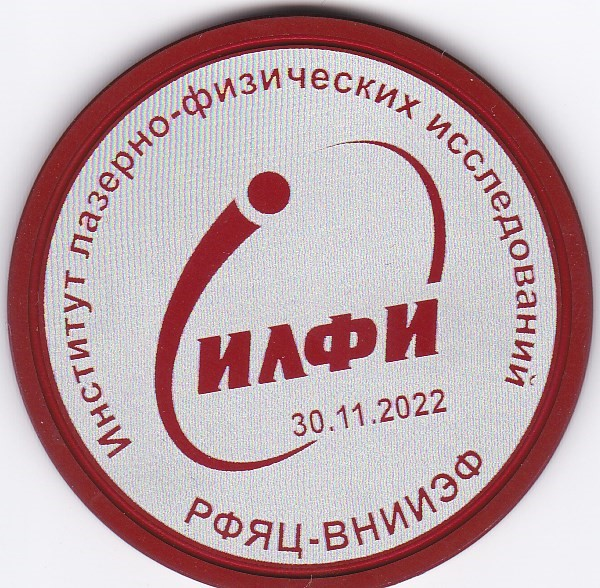
2004
Создание Технопарка Саров в Сатисе
Цель деятельности Технопарка – создание новых высокопроизводительных рабочих мест в
высокотехнологичных
компаниях в сфере исследований и разработок, производственных и высоких технологий, а также в сфере
услуг
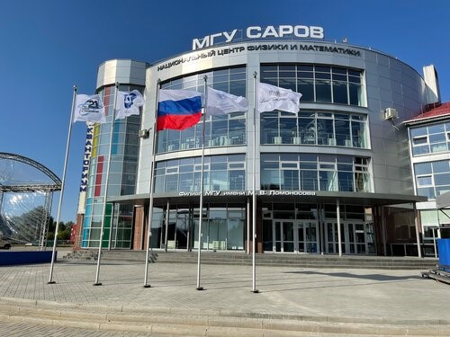
2011
Суперкомпьютер “Ломоносов” с пиковой производительностью 1.7 петафлопс¹ (совместная
разработка с МГУ)
включен в список самых мощных в мире
Петафолпс¹- количество арифметических операций в секунду
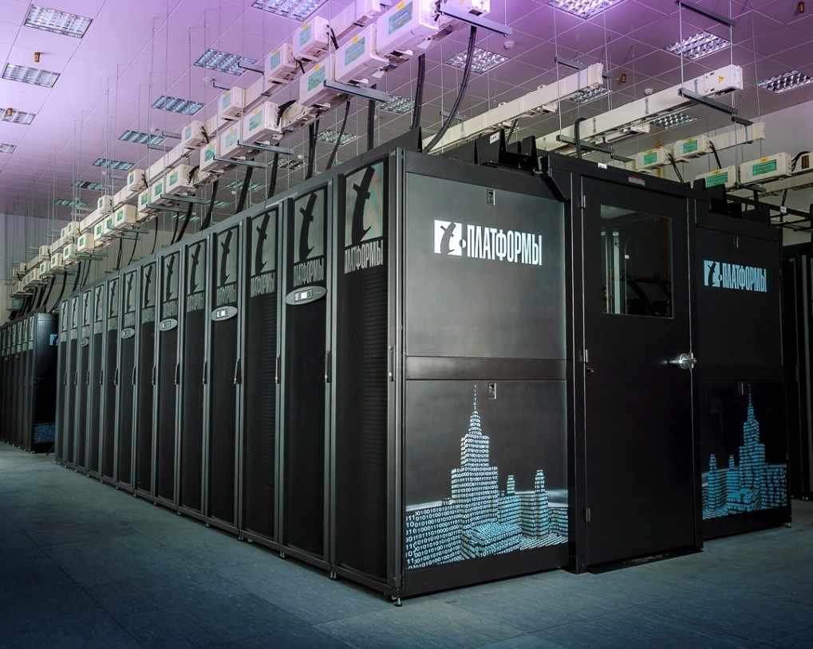
2015
РФЯЦ-ВНИИЭФ принимает активное участие в международном проекте ITER
2020
Запущен первый модуль УФЛ-2М
Лазерная установка нового поколения предназначена для фундаментальных исследований в области
физики
высоких плотностей энергии, в том числе – применения лазерного термоядерного синтеза в
энергетике.
УФЛ-2М будет иметь двойное назначение, одно из которых – военное. Эксперименты в области
физики плотной
горячей плазмы и высоких плотностей энергии, которые проводятся на подобного рода установках, могут быть
направлены на создание термоядерного оружия. Второе направление – энергетическое.
Лазерный термоядерный
синтез может использоваться для разработки энергии будущего
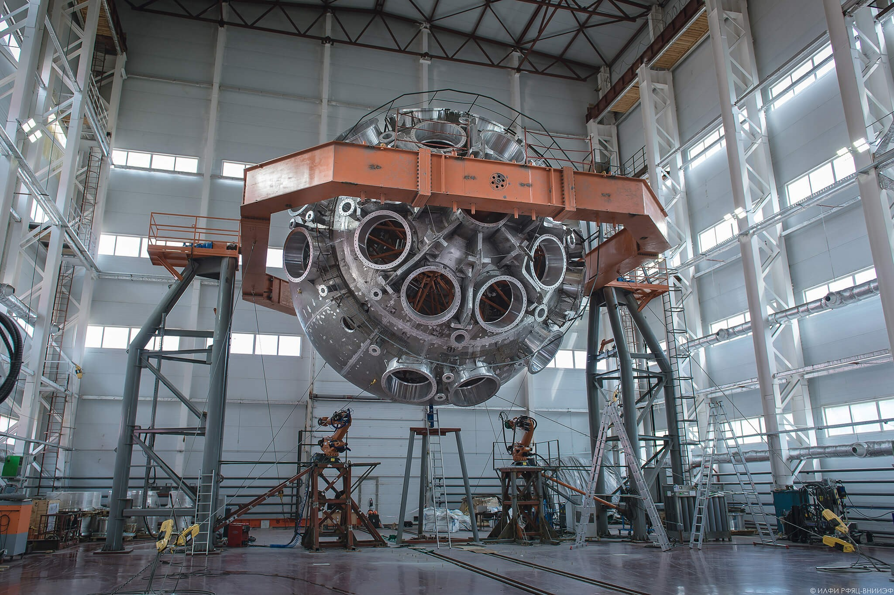
2024
В Саровском политехническом техникуме имени Б.Г. Музрукова при активном участии
РФЯЦ-ВНИИЭФ открылась
первая в Сарове научно-производственная мастерская «Аддитивные технологии»
РОСАТОМ объединяет в себе полный цикл аддитивного производства: от разработки и изготовления
3D-принтеров до создания порошковых материалов и оказания услуг в сфере 3D-печати
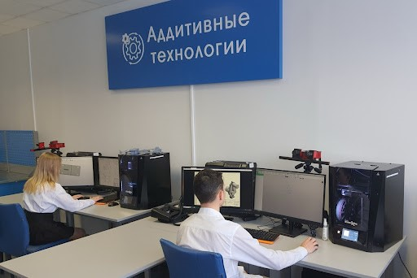